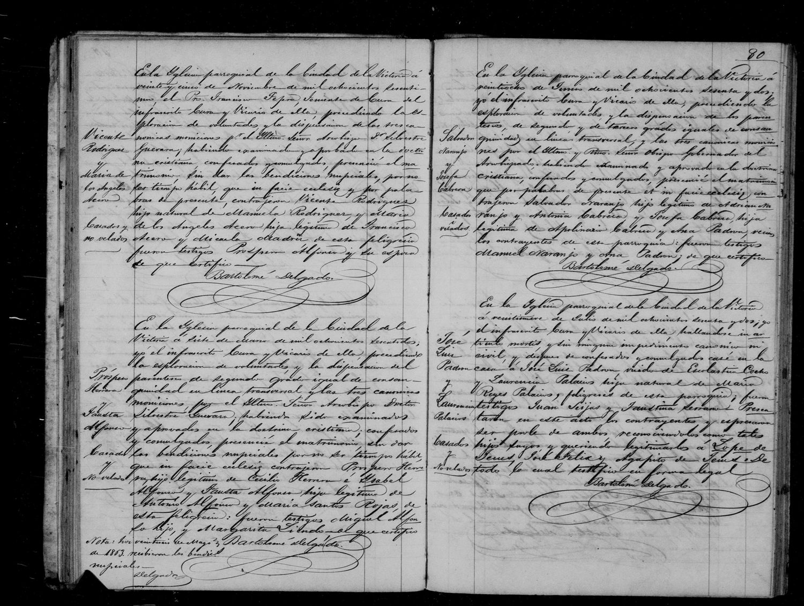
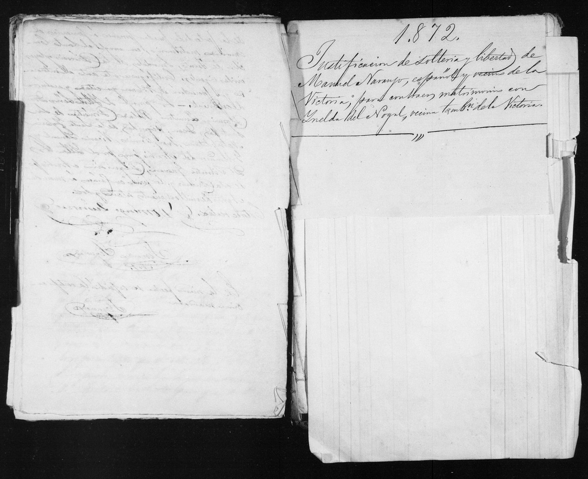
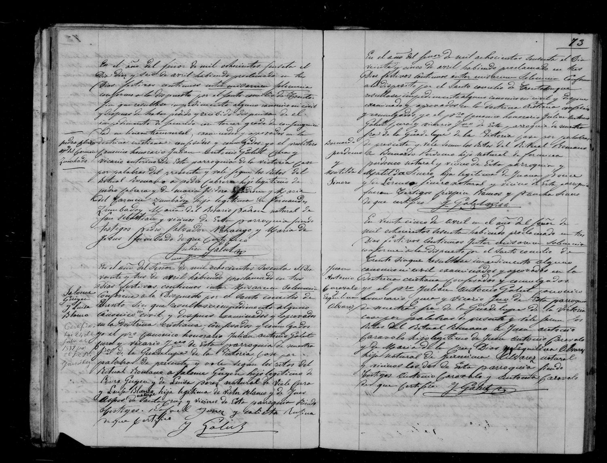
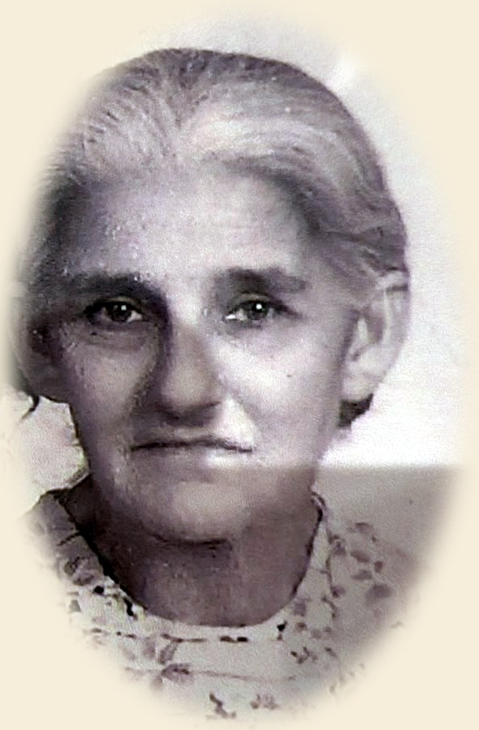
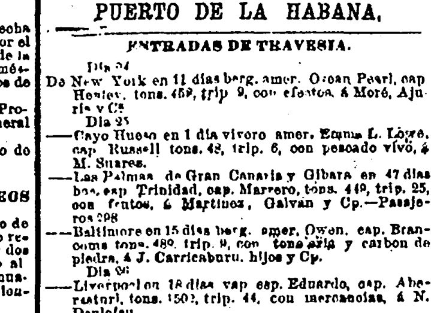

Novedades
Todo lo que se ha ido incluyendo en la web, de lo más reciente a lo más antiguo. Pulse en una novedad para ir a su página.
22nov2026 Documentos4 documentos de Francisco Javier en AraguaSoltería y dispensa de 1857 con el árbol de los Cabrera, su entierro con música (1866) y la boda y el entierro de su hija.22nov2026
Documentos4 documentos de Francisco Javier en AraguaSoltería y dispensa de 1857 con el árbol de los Cabrera, su entierro con música (1866) y la boda y el entierro de su hija.22nov2026 FotoRetrato de Josefa Antonia Cabrera de Quintana y PadrónLa madre de los dieciocho hermanos Naranjo Cabrera (Telde, 1800). Del árbol de Luisa Virginia Henríquez Guerra en Geneanet.22nov2026
FotoRetrato de Josefa Antonia Cabrera de Quintana y PadrónLa madre de los dieciocho hermanos Naranjo Cabrera (Telde, 1800). Del árbol de Luisa Virginia Henríquez Guerra en Geneanet.22nov2026 PersonaAna Antonia Naranjo Cabrera y los Falcón NaranjoFicha nueva, con su retrato y una foto del matrimonio con Juan Falcón de Llarena, y sus diez hijos en el árbol.22nov2026
PersonaAna Antonia Naranjo Cabrera y los Falcón NaranjoFicha nueva, con su retrato y una foto del matrimonio con Juan Falcón de Llarena, y sus diez hijos en el árbol.22nov2026 FotoRetrato y firma de Manuel Naranjo CabreraCon su boda en San Sebastián de los Reyes (1872), su muerte (1913) y su hijo León Domingo.22nov2026
FotoRetrato y firma de Manuel Naranjo CabreraCon su boda en San Sebastián de los Reyes (1872), su muerte (1913) y su hijo León Domingo.22nov2026 FotoRetrato de Inocencia «Nina» Naranjo FernándezPublicado en MyHeritage.22nov2026
FotoRetrato de Inocencia «Nina» Naranjo FernándezPublicado en MyHeritage.22nov2026 FotoRetrato de Hugo Ángel Fernández AradaPublicado en MyHeritage, que le da 1910-1984; nuestros datos dicen 1913.22nov2026✥WebFicha y cronología de cada personaEl árbol se organiza como Geneanet: al tocar a alguien se ven sus datos, su familia y su cronología.22nov2026❦DatosFélix Naranjo Fernández, hijo de NatalioCorregido en el árbol y en las fichas: es hijo de Natalio Naranjo Rodríguez, no de Agustín.22nov2026❦DatosLos padres de Rosalía Rodríguez ValdésAgustín Rodríguez de Sosa y Regina de los Ángeles Valdés Delgado, con sus hermanos Carolina, Lucas y Juan.22nov2026❦Datos258 personas en el árbolTodo el árbol de Geneanet (de Diego Pérez Naranjo, h. 1470, a las ramas de Telde y Las Palmas) unido a nuestra investigación de Cuba y Venezuela.22nov2026
FotoRetrato de Hugo Ángel Fernández AradaPublicado en MyHeritage, que le da 1910-1984; nuestros datos dicen 1913.22nov2026✥WebFicha y cronología de cada personaEl árbol se organiza como Geneanet: al tocar a alguien se ven sus datos, su familia y su cronología.22nov2026❦DatosFélix Naranjo Fernández, hijo de NatalioCorregido en el árbol y en las fichas: es hijo de Natalio Naranjo Rodríguez, no de Agustín.22nov2026❦DatosLos padres de Rosalía Rodríguez ValdésAgustín Rodríguez de Sosa y Regina de los Ángeles Valdés Delgado, con sus hermanos Carolina, Lucas y Juan.22nov2026❦Datos258 personas en el árbolTodo el árbol de Geneanet (de Diego Pérez Naranjo, h. 1470, a las ramas de Telde y Las Palmas) unido a nuestra investigación de Cuba y Venezuela.22nov2026 PrensaFélix Naranjo Fernández en Tenerife (1933 y 1936)Dos noticias de la prensa de Santa Cruz que encajan con el Félix que llegó de Cuba en 1924.22nov2026
PrensaFélix Naranjo Fernández en Tenerife (1933 y 1936)Dos noticias de la prensa de Santa Cruz que encajan con el Félix que llegó de Cuba en 1924.22nov2026 FotoFotos de la familia de Pinar del RíoFélix Naranjo Cabrera, Quirina, Juana y José Naranjo Fernández.22nov2026✥WebNace la web de los Naranjo de TeldeFichas de la familia, viajes, cronología y fuentes.
FotoFotos de la familia de Pinar del RíoFélix Naranjo Cabrera, Quirina, Juana y José Naranjo Fernández.22nov2026✥WebNace la web de los Naranjo de TeldeFichas de la familia, viajes, cronología y fuentes.

Documentos8 documentos de Salvador en VenezuelaSu llegada a La Guaira (1835), el expediente de soltería y la boda de 1862, bautismos de sus hijos y entierros en La Victoria.22nov2026Documentos4 documentos de Francisco Javier en AraguaSoltería y dispensa de 1857 con el árbol de los Cabrera, su entierro con música (1866) y la boda y el entierro de su hija.22nov2026
DocumentosManuel: soltería de 1872 y bautismos de sus hijosEl expediente dice que su padre Adrián seguía vivo en Gran Canaria en 1872. Con los bautismos de Ignacio, Adrián y Luisa Elena.22nov2026
DocumentosLa boda de Pedro Cabrera (1860)El hermano de Josefa Antonia se casa en La Victoria; la partida confirma que su madre se llamaba María Isidora Padrón.22nov2026✥WebLas generaciones, en el árbolCada fila del árbol indica su generación, contada desde Diego Pérez Naranjo (h. 1470): Félix y Rosalía son la XII.22nov2026
FotoRetrato de Quirina FernándezRehecho en óvalo a partir de la foto con Elvira, con la cara entera.22nov2026FotoRetrato de Josefa Antonia Cabrera de Quintana y PadrónLa madre de los dieciocho hermanos Naranjo Cabrera (Telde, 1800). Del árbol de Luisa Virginia Henríquez Guerra en Geneanet.22nov2026PersonaAna Antonia Naranjo Cabrera y los Falcón NaranjoFicha nueva, con su retrato y una foto del matrimonio con Juan Falcón de Llarena, y sus diez hijos en el árbol.22nov2026FotoRetrato y firma de Manuel Naranjo CabreraCon su boda en San Sebastián de los Reyes (1872), su muerte (1913) y su hijo León Domingo.22nov2026FotoRetrato de Inocencia «Nina» Naranjo FernándezPublicado en MyHeritage.22nov2026FotoRetrato de Hugo Ángel Fernández AradaPublicado en MyHeritage, que le da 1910-1984; nuestros datos dicen 1913.22nov2026✥WebFicha y cronología de cada personaEl árbol se organiza como Geneanet: al tocar a alguien se ven sus datos, su familia y su cronología.22nov2026❦DatosFélix Naranjo Fernández, hijo de NatalioCorregido en el árbol y en las fichas: es hijo de Natalio Naranjo Rodríguez, no de Agustín.22nov2026❦DatosLos padres de Rosalía Rodríguez ValdésAgustín Rodríguez de Sosa y Regina de los Ángeles Valdés Delgado, con sus hermanos Carolina, Lucas y Juan.22nov2026❦Datos258 personas en el árbolTodo el árbol de Geneanet (de Diego Pérez Naranjo, h. 1470, a las ramas de Telde y Las Palmas) unido a nuestra investigación de Cuba y Venezuela.22nov2026
PrensaEl viaje del Trinidad (1878)La llegada del barco a La Habana en el Diario de la Marina y la carta de los pasajeros que elogia a «D. Félix Naranjo».22nov2026PrensaFélix Naranjo Fernández en Tenerife (1933 y 1936)Dos noticias de la prensa de Santa Cruz que encajan con el Félix que llegó de Cuba en 1924.22nov2026FotoFotos de la familia de Pinar del RíoFélix Naranjo Cabrera, Quirina, Juana y José Naranjo Fernández.22nov2026✥WebNace la web de los Naranjo de TeldeFichas de la familia, viajes, cronología y fuentes.